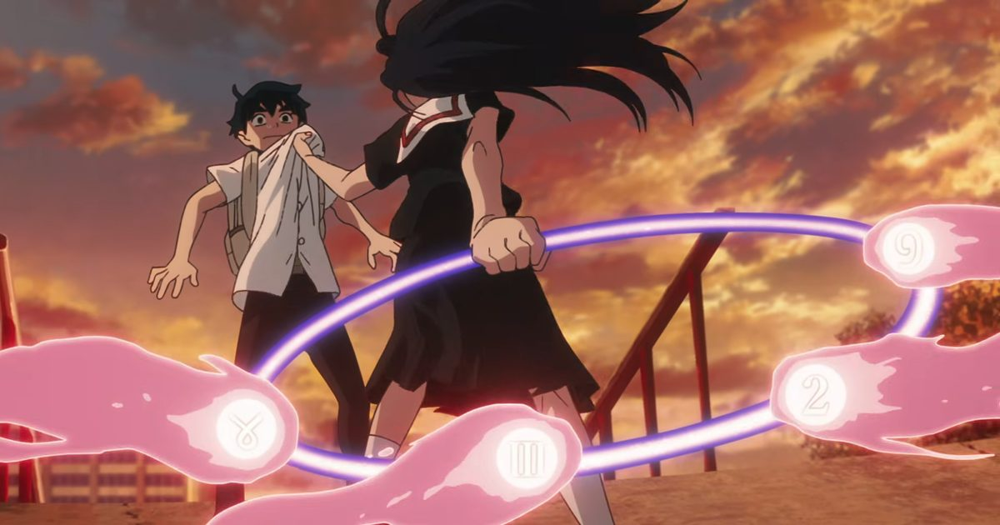

2026-11-05 · 动画化深读

11 月 5 日，REMOW 公布水上悟志《魂环（スピリットサークル / Spirit Circle）》TV 动画： 2026 年 12 月日本开播，并同步全球配信，全 18 话。 同步放出的是前导视觉图、第一支 PV、四名主役声优，以及一首专门为它写的片尾曲。
视觉图上，女主角石神鉱子额头上有一道淌着血的伤口，标语是一句足以当恐怖片用的话： 「不管转世多少次，我都会来杀你。」 PV 开场，她问男主角「你相信轮回吗」，紧接着是那句「我还要让你再死七次」。
但这条新闻里最重的一行字，不在视觉图上，在制作名单里： 导演兼系列构成 佐藤竜雄，2026 年 4 月因肝衰竭去世，享年 61 岁。这是他的导演遗作。 作品由副导演水野健太郎接手完成，NAGOMI、EOTA 与 TWIN ENGINE 在联合声明里说，团队是「继承导演的意志，把它做完的」。
所以这篇文章想谈的不是「遗作好感人」，而是一个更冷的问题： 一部动画的导演死在制作中途，它凭什么还能是一部完整的作品？ 答案藏在一个很少有人注意的工序顺序里。
原作是水上悟志 2012 年 5 月到 2016 年在少年画报社《Young King OURs》连载的漫画，全六卷、四十余话。 故事起点很小：中学生芙太·奥丘能看见幽灵，左脸从小贴着一块纱布；转学生石神鉱子看见纱布底下的胎记之后，态度骤变， 因为那块胎记是她在某一世亲手刻上去的诅咒。为了搞清楚自己到底做过什么，芙太开始用「魂环」这件东西， 一世一世地回溯——从遥远的古代一路看到未来。
这个设定带来一个直接的制作难题：它需要七个时代的美术。 水上悟志自己在评论里说得很客气——「七个不同时代的人生，意味着七倍的设定工作量」。 这句话是理解整部动画所有决策的钥匙，后面会反复用到。
制作阵容：动画由 NAGOMI × EOTA 联合承担（两家同属 TWIN ENGINE 集团），角色设计藤本さとる，制片 TWIN ENGINE； 声优方面，芙太由浦和希饰演，鉱子由长濑安娜饰演，Run 由 Eri Yukimura 饰演，East 由中村悠一饰演。
行业里「导演中途去世」的案例不少，结果差别极大，而差别几乎只由一件事决定：人是在哪一道工序上走的。
如果导演死在剧本之前，团队就必须替他想——那部作品的作者性会明显漂移，最后往往变成「一集一个味」的合集。 如果死在剧本之后，情况完全不同：故事怎么讲、每一集断在哪里、哪一场戏是重点，这些已经写死在纸上了。 剩下的是演出执行、作画、音响——这些是团队协作能接住的部分。
佐藤竜雄这次是导演兼系列构成，两个头衔都在他身上，也就是说剧本层面的判断是他做的， 而且从制作进度看，这一层已经完成（否则 12 月播不出来）。 这条冷知识解释了两件事：
一，这部片子的「作者性」会集中在结构与前三话——因为那是导演意图最容易被保住、也最容易被检验的地方； 二，单集演出的风格会更平均、更少偏锋——不是团队不行，而是没有人在每一集旁边推翻重来。
换句话说，我们大概率会看到一部「骨架非常硬、肌肉比较均匀」的改编。 对《魂环》这种结构比场面更重要的作品来说，这其实是最好的结果； 但如果有人期待佐藤竜雄那种《机动战舰抚子号》式的、突然把类型掀翻的疯劲，可能会失望。 他的疯劲这次留在了剧本里，而不是在分镜里。
顺便说一句水野健太郎这个人选。他的履历是《卡片战斗先导者 overDress》《游戏王 GO RUSH》的副导演、 《杖与剑的魔剑谭》的演出——这是一条「长线番组出身」的路：擅长在固定周期里稳定出货， 擅长处理「每一集都要有交代」的叙事节奏。把他放在这里，选的是稳，不是炫。 这也从侧面说明制作委员会对这部片子的期待是什么：把它做完、做对，而不是做成话题作。
很多人把「18 话」当成一个中等的数字一带而过。但在水上悟志身上，这个数字是有历史的。
2022 年，《惑星公主蜥蜴骑士》动画化——原作 65 话，塞进 12 集，平均每集五点四话。 结果是公认的失败：不是故事不好，是密度把人挤死了，名场面一集赶三场，情绪没有地方落地。 2024 年，《战国妖狐》改成三季（约 37 集），原作上百话，平均每集约两点七话， 口碑立刻回来了——同一批观众，同一个作者，唯一变的是「留给你呼吸的空间」。
现在《魂环》：原作四十余话，18 集，平均每集约两点五话。 它正好落在《战国妖狐》那一档，而不是《蜥蜴骑士》那一档。 这不是巧合，这是拿前两次的失败和成功换来的参数。
| 作品 | 年份 | 话数 | 原作体量 | 约每集话数 | 结果 |
|---|---|---|---|---|---|
| 惑星公主蜥蜴骑士 | 2022 | 12 | 约 65 话 | 5.4 | 压缩过度，口碑失败 |
| 战国妖狐 | 2024 | 约 37（三季） | 上百话 | 约 2.7 | 节奏回正，评价回升 |
| 魂环 | 2026 | 18 | 六卷、四十余话 | 约 2.5 | 落在安全区 |
注：话数为公开资料推算的近似值，用于比较「改编密度」；不同版本对「季」的划分口径不一，故只取量级。
这张表还有一个更硬的读法：它解释了「为什么是 18 话而不是 24 话」。 24 话意味着要么注水，要么把七个时代里的两三个扩写成原创段落——对一部结构严丝合缝的轮回叙事来说， 注水比删减更致命，因为你只要多给某一世两集，整部作品的「重量分配」就歪了。 而《魂环》的说服力，全在重量分配上：每一世的篇幅，本身就是它对「哪一次人生更重」的判断。
原作 2016 年完结，动画 2026 年才来，中间隔了十年。这不是没人想做，是没人愿意按老办法做。
轮回题材的动画化有一个隐形成本：每一个时代都要一套完整的美术体系—— 服装、建筑、道具、色彩、甚至摄影处理。七个时代意味着七套； 而且这七套不是并列的单元剧，它们必须能在一部片子里被认出「是同一个人」。 这就是水上悟志那句「七倍的设定工作量」的真实含义：不是七倍的美术量，是七倍的对齐工作。
解法这次很清楚：NAGOMI 与 EOTA 两家同集团工作室分担，TWIN ENGINE 统筹出品。 这是一套「用集团内部产能摊平风险」的结构——不做单点豪赌，而是把一部高难度作品拆成两家能同时开工的流水线。 这也顺带解释了全球配信为什么会同时落地：REMOW 参与发行，海外的钱在企划阶段就已经进来了。 对一部「成本结构异常」的作品来说，这是它能成立的前提。
值得一提的是，水上悟志跟动画这个媒介并不陌生。2018 年的《Planet With》就是他做原作与系列构成的原创动画， 后来才反过来漫画化。也就是说，他非常清楚「动画要什么」—— 这也让这次改编多了一层意味：他不是被改编的人，他是知道改编会失去什么的人。 他那句感谢，说得比一般的原作者客气话具体得多，因为他知道七倍工作量是真的。
这条容易被当成花絮，其实是这次改编最关键的技术决策之一。
官方确认：浦和希与长濑安娜不仅配现在这一世的芙太与鉱子，还要配两人在各个前世里的样子。 同时，片尾曲《ここがどんな世界でも》由长濑安娜演唱——这是她的首支个人单曲，作词 UiNA，作曲编曲加藤达也，为动画专门写的。
把这些放在一起看，就明白了：轮回叙事在动画里最容易崩的地方，是观众记不住「谁是谁」。 七个时代、七套造型、七组关系，观众第一眼只能靠外形分辨，而外形恰恰是最会变的东西。 唯一不変的是声音。让同一副嗓子穿过七个时代，等于给了观众一个不需要解释的锚—— 你听到她开口，就知道这是同一个人，哪怕她这次是个男人、是个小孩、或者已经不是人。
让女主角唱 ED，是同一个逻辑的延伸：歌声是「灵魂」这件事在媒介层面最直接的证明。 一首跨过片尾的歌，比任何一句台词都更容易让人相信「她记得」。 这也是为什么这首曲子要专门写，而不是拿一首现成的 tie-up 歌来用。
顺带说一个反差：片头我们只等到「她来杀你」，片尾却是一首由她唱的歌。 这个 IP 的情感结构，从第一集就会被这两端夹住。
8.1 / 10（前瞻，未看正片）。 加分给「18 话」这个数字所代表的克制，以及用声优与主题曲解决辨识度问题的思路； 扣分给一个结构性的风险：七个时代的中段最容易散架，而那里恰好是「导演意图」最薄弱的地方。
制作方的三份声明里，出现频率最高的词是「继承」——继承导演的意志、继承他的想法。 这是一句必须说、但也很难验证的话。真正能验证它的不是采访，是第 4 话到第 9 话： 如果那几集还能保持同一个呼吸节奏，说明分镜阶段的意图被保留下来了；如果开始出现「每集一个风格」，说明只剩下骨架。 另外，选择 12 月而不是 2027 年 1 月，意味着它主动避开了冬季新番的主战场——对一部没有大 IP 加持的作品，这是聪明的。
最锋利的一条：「遗作」会替这部片子加分，但只会加到第四话。 第一集所有人都在看「他留下了什么」，第四集之后观众只看「这个故事讲得好不好」。 情怀的保质期比大多数人想的短，而这恰恰是对逝者最公平的一种评价方式—— 他留下的是一部作品，不是一个纪念品。
第二条：这次真正值得被行业记下来的，是「18 话」这个决定。 在一部作品可以被无限注水、也可以被无限压缩的行业里，愿意按原作重量去配集数，是一种不显眼但很硬的专业性。 水上悟志的改编史刚好提供了对照组：同一个作者、同一批观众，差的就是每集两话还是一集五话。
同类「轮回 / 多时代」叙事的动画化，难处几乎一致：观众的记忆成本，永远高于创作者的表达欲。 《魂环》这次用三招对抗它——集数给够（2.5 话/集）、声音统一（同一批声优跨时代）、以及每一世都用「鉱子的杀意」这条线串起来。 这三招都不新鲜，但同时用上，说明制作组很清楚自己要打的是一场「记忆战」而不是「作画战」。 对照站内此前拆过的两部作品： 《魔法使之夜》是「世界观第一格却是动画化最后一格」， 《孤独摇滚！》剧场版是「原作完结后才补上的影像化」—— 《魂环》站在两者之间：它既晚于原作十年，又必须一次讲完，没有续篇可以兜底。
12 月开播后，我们准备测三件事： ① 辨识度测试——把前六个时代的芙太与鉱子截图混在一起，给没看过原作的人认「哪两个是同一个人」，正确率低于七成说明视觉锚没做够； ② 中段掉速——逐集记录「场景切换次数」与「台词密度」，第 6–12 集如果出现明显下滑，那就是结构撑不住，不是观众没耐心； ③ ED 的落点——主题曲第一次完整出现在第几集片尾、配的是哪一世。这个位置基本决定了整部片子的情感结论。
这次的新闻稿里，最容易被写成标题的是「遗作」，最应该被记住的是「18 话」。
因为前者是命运，后者是选择。 佐藤竜雄在剧本阶段把故事定型，团队按他的骨架把它执行完； 而 18 这个数字，是拿《蜥蜴骑士》的失败和《战国妖狐》的成功算出来的参数—— 一部关于「反复重来」的作品，恰好是由一次行业级的「吸取上次教训」做出来的。
12 月开播。如果你没看过原作，前两集你会以为这是一部校园怪谈； 到第四集你会发现自己其实在看一部关于「我上一世欠了什么」的推理剧； 而看到某个时代，你会突然意识到——那句「不管转世多少次，我都会来杀你」， 说的可能根本不是恨。